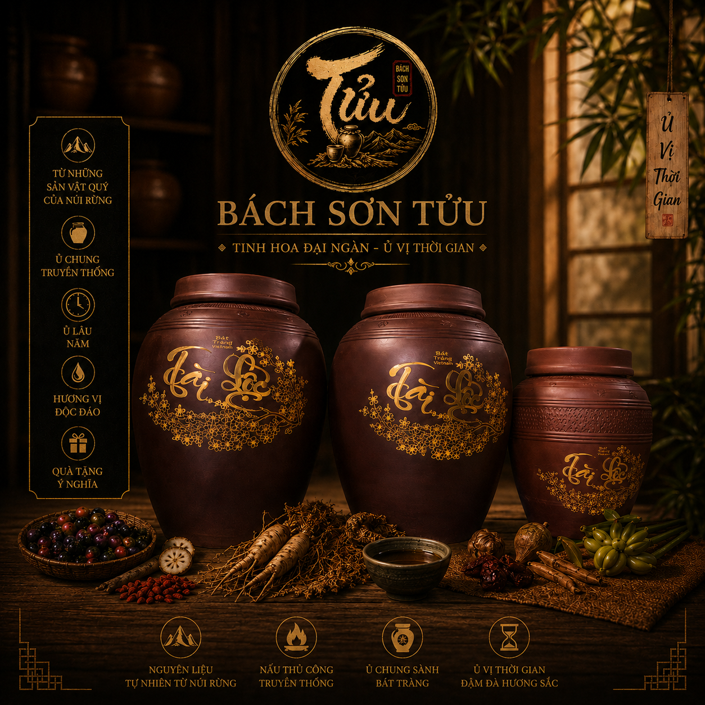
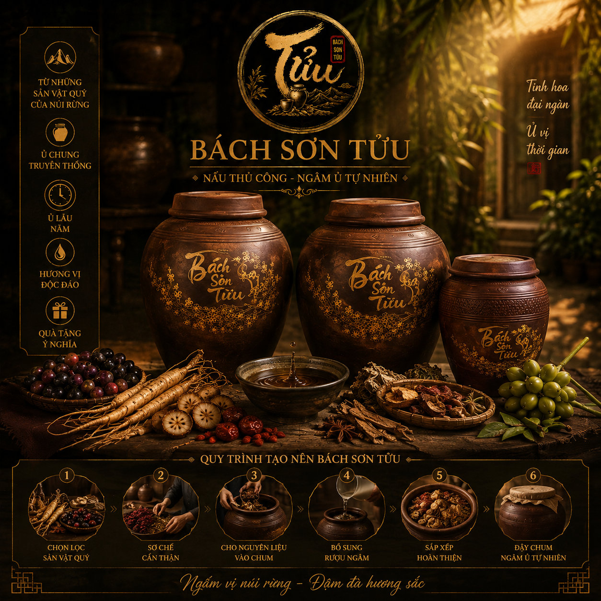

Một hành trình gìn giữ hương vị tự nhiên, kết tinh từ sản vật, con người và thời gian.

Bách Sơn Tửu được hình thành từ mong muốn lưu giữ những hương vị đặc trưng của sản vật tự nhiên và đưa những giá trị ấy đến gần hơn với người thưởng thức.
Chúng tôi tin rằng một sản phẩm có giá trị không chỉ nằm ở hương vị cuối cùng, mà còn nằm trong câu chuyện về vùng đất, nguyên liệu, con người và thời gian tạo nên nó.
Chúng tôi theo đuổi những giá trị giản dị nhưng bền vững trong từng sản phẩm.
Trân trọng những nguyên liệu tự nhiên, lựa chọn những sản vật mang hương vị đặc trưng của vùng đất.
Từng công đoạn được thực hiện bằng sự cẩn trọng, kinh nghiệm và tâm huyết của người làm.
Kiên nhẫn để thời gian hoàn thiện hương vị và tạo nên dấu ấn riêng trong từng sản phẩm.
Với Bách Sơn Tửu, thời gian không chỉ là một khoảng chờ. Đó là một phần của quá trình tạo nên sản phẩm.
Từ nguyên liệu ban đầu đến thành phẩm, mỗi bước đều cần sự kiên nhẫn và chăm chút. Chúng tôi mong muốn giữ lại những gì tự nhiên và chân thật nhất trong mỗi chai rượu.

Khám phá những sản phẩm được tạo nên từ sự kết hợp giữa thiên nhiên, con người và thời gian.
KHÁM PHÁ SẢN PHẨM